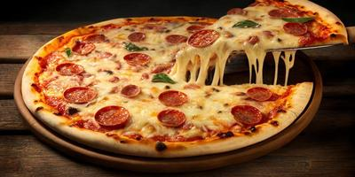

Cardapio de pizzas (salgadas)
Mussarela – (mussarela, rodelas de tomate e orégano);
Escarola – (escarola refogada, mussarela e orégano); Marguerita – (mussarela, rodelas de tomate e manjericão); Atum – (mussarela, atum e cebola e orégano); Romana – (mussarela aliche e queijo parmesão e orégano); Calabresa – (mussarela, linguiça calabresa e cebola); Napolitana – (mussarela, rodelas de tomate, queijo parmesão e orégano); Brócolis – (brócolis refogado coberto com mussarela e alho); Siciliana – (mussarela, bacon e champignon ao molho rose); Lombinho – (mussarela, lombo defumado e cebola); Portuguesa – (mussarela, ovos, palmito, pimentão, ervilha, presunto e cebola); Alho e óleo – (mussarela, alho e queijo parmesão); Palmito – (mussarela, palmito e orégano); Camarão – (camarão, molho de tomate, mussarela e catupiry); Toscana – (linguiça calabresa bacon e catupiry); Mineira – (mussarela, catupiry e milho verde); Pepperoni – (mussarela, pepperoni e cebola); Bacon – (mussarela coberta com bacon e orégano); Mista – (mussarela, presunto e orégano); Califórnia – (mussarela, presunto, salada de frutas e orégano); Vegetariana – (mussarela, pimentão, cebola, azeitona, ervilha, tomate, palmito, milho e orégano); Frango – (molho de tomate, mussarela e frango); Frango com Catupiry – (molho de tomate, mussarela, frango e catupiry); Bolonhesa – (mussarela, molho a bolonhesa e orégano); Rúcula com Tomate Seco – (mussarela, rúcula, tomate seco e orégano); Champignon – (mussarelam champignon e orégano); Espanhola – (presunto, mussarela, calabresa e cebola); Berinjela – (berinjela, cebola, parmesão, mussarela e azeitona preta); Brasileira – (ervilha, milho, palmito, tomate, mussarela e manjericão); Aliche – (mussarela, aliche e tomates); Quatro queijos – (mussarela, provolone, parmesão e catupiry); Havaiana – (mussarela, lombo e abacaxi); Italiana – (mussarela, parmesão, salame italiano e tomates); Parmegiana – (presunto, mussarela, molho parmegiana); Tropical – (mussarela, frango, milho, ervilha, ovos e catupiry); Canadense – (mussarela, lombo, champignon, palmito e catupiry); Strogonoff – (mussarela, champignon, strogonoff de frango e batata palha); Bauru – (Presunto, mussarela, tomate, orégano e azeitonas); Carne Seca – (Carne seca, mussarela, cebola, parmesão e orégano); Gorgonzola – (Gorgonzola, tomate, orégano e azeitonas). Sabores de pizza para cardápio (doces)
Banana com Canela – (banana caramelizada, leite condensado e canela);
Chocolate – (chocolate preto ou branco); Prestígio – (chocolate, coco ralado e leite condensado); Romeu e Julieta – (goiabada e mussarela); Sensação – (chocolate, granulado e morangos); Beijinho – (chocolate branco, coco e leite condensado); M&M – (chocolate e M&M); Sorvete – (chocolate e sorvete); Paçoca – (chocolate e paçoca de amendoim); Nutella com Morango – (nutella e morango).